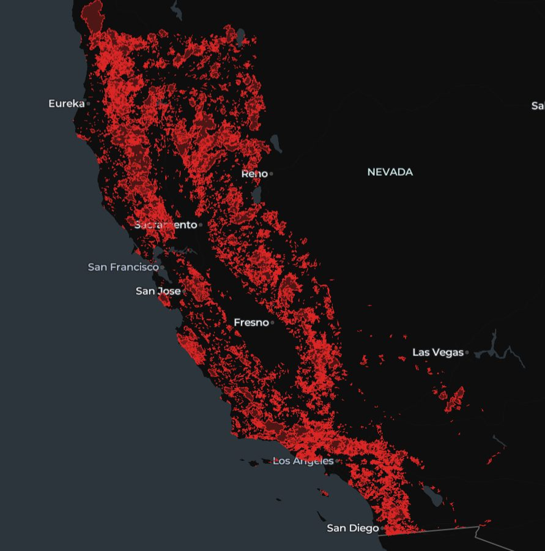

TAM AIR Club × CAL FIRE × UC Irvine × UCSF
We are building a machine-learning system that predicts where wildfires are likely to start next month, on an 800 m × 800 m grid covering all of California. Twelve datasets — fire history, climate, terrain, vegetation, population and infrastructure — are combined on that grid.
Everything we have built so far is open to explore in the Wildfire Explorer: interactive maps, every figure, the statistical analysis and our literature review.

Every CAL FIRE fire perimeter since 1993, in the Wildfire ExplorerJump straight to any part of the project
18 map layers — temperature, rainfall, fire danger, wind, population, terrain — month by month from 1993 to 2025.
Open mapsEvery chart and map from our analysis of the 12 datasets, searchable by dataset.
Browse figures104 possible risk factors ranked by 11 methods, plus our first prediction models and how well they perform.
See the analysis52 research papers (2016–2026) on machine learning for wildfire prediction, summarized.
Read the reviewHighlights from California’s fire history and our statistical analysis
Acres burned in 2020 alone — California’s worst fire year on record
Of burned acreage occurs during the June–September fire season
Of fires cause 58% of all damage — an extreme concentration of risk
Fires larger than 100,000 acres recorded since 1993
We ranked 104 possible risk factors with 11 independent statistical methods. The factors that consistently came out on top were:
Early machine-learning models built on these factors already separate high- and low-risk areas well. The full results are in the Explorer.
Four highlights from our analysis of CAL FIRE’s historical fire perimeters
Seven of nine phases complete
Gathered 12 geospatial datasets covering fire history, climate, terrain, vegetation, population, infrastructure and wind.
Put every dataset on one common 800-meter grid covering California, so they can be compared pixel by pixel.
Trends, locations and causes across the CAL FIRE, MTBS and FPA-FOD fire datasets.
Elevation, slope, aspect, tree canopy and vegetation types — the landscape and the fuel it carries.
A three-part study of PRISM climate data; dry air (vapor-pressure deficit) stood out as the strongest climate signal.
Population and housing near wildlands, fires near roads and power lines, and fire-weather wind patterns.
Ranked 104 risk factors with 11 methods and built the first baseline prediction models.
A spatio-temporal neural network that predicts next month’s fire risk across the 800 m grid.
Test the model on recent fire seasons and deliver it as a risk-assessment tool for fire professionals.
Twelve public datasets — click any one to explore it in the Wildfire Explorer
Read the full report, follow the analysis step by step, or explore the mega-fires map
Exploratory analysis of CAL FIRE’s fire perimeters, with 19 high-resolution figures and methods.
PDF (3.6 MB)Every dataset’s complete analysis, with code and results, readable in the browser from its dataset page.
Open in the ExplorerAll 38 fires larger than 100,000 acres since 1993, on one interactive map. Large file (~35 MB) — best on desktop.
Open mapThis research is made possible through collaboration
Student-led research team from Tamalpais High School
CAL FIRE - California Department of Forestry and Fire Protection
UC Irvine - Environmental Science
Research Collaborator - UCSF
Research Collaborator - UCSF
Research Collaborator - UCSF
Learn more about our other projects and how you can support our mission to protect California from wildfires.